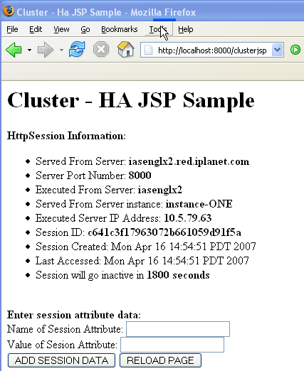
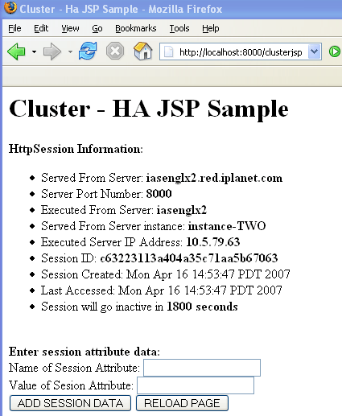

clusterjsp
Sample Application
Install the GlassFish server by
downloading it from GlassFish
Download Page at: https://glassfish.dev.java.net/public/downloadsindex.html
GlasssFish installation requires JDK 5 (1.5.0_10) and ant 1.6.5 (included).
java -Xmx256m -jar filename.jar
To download and install Load Balancer plugin to work with GlassFish,
follow the steps below.
asDir=<Set
value of ${glassfish.home} e.g.
/export/tinderbox/dinesh/my814/publish/glassfish>wsInstanceDir=<Set Sun Webserver
installation path to Webserver Instance
e.g.
/export/tinderbox/dinesh/WebServer/ws6.1/https-iasenglx2.red.iplanet.com>os=<Platform e.g.
solaris/linux>The above script automates following steps.
Legends:
websrvr_install_dir - Sun Java System Webserver install Directory
websrvr_instance_dir - Sun Java System Webserver Instance Directory
as_install_dir - GlassFish installation Directory.
<websrvr_install_dir>/plugins/lbplugin/bin<websrvr_install_dir>/plugins/lbplugin/resource<websrvr_install_dir>/plugins/lbplugin/errorpages<as_install_dir/lib/lbplugin/lib/webserver-plugin/<OS>/iws61/libpassthrough.so
as <websrvr_install_dir>/plugins/lbplugin/bin/libpassthrough.so
Where <OS> refers to 'linux' for the linux platform, and 'solaris' for the solaris platform.
<websrvr_install_dir>/plugins/lbplugin/bin/libpassthrough.so.
<as_install_dir>/lib/lbplugin/lib/webserver-plugin/<OS>/iws61/errorpages/default-error.html
as <websrvr_install_dir>/plugins/lbplugin/errorpages/default-error.html
<as_install_dir>/lib/lbplugin/lib/webserver-plugin/<OS>/iws61/errorpages/sun-http-lberror.html
as <websrvr_install_dir>/plugins/lbplugin/errorpages/sun-http-lberror.html
<as_install_dir>/lib/lbplugin/lib/webserver-plugin/<OS>/iws61/*.res
To <websrvr_install_dir>/plugins/lbplugin/resource
<as_install_dir>/lib/lbplugin/lib/install/templates/loadbalancer.xml.example
as <websrvr_instance_dir>/config/loadbalancer.xml.example
<as_install_dir>/lib/lbplugin/lib/dtds/sun-loadbalancer_1_2.dtd
as <websrvr_instance_dir>/config/sun-loadbalancer_1_2.dtd
<websrvr_instance_dir>/config/magnus.conf.
##BEGIN EE LB Plugin ParametersThe above lines need to be before following line.
Init fn="load-modules" shlib="<websrvr_install_dir>/plugins/lbplugin/bin/libpassthrough.so"
funcs="init-passthrough,service-passthrough,name-trans-passthrough" Thread="no"
Init fn="init-passthrough"
##END EE LB Plugin Parameters
Init fn="load-modules" shlib=".../libj2eeplugin.so" shlib_flags="(global|now)"Replace <websrvr_install_dir> with your Web Server installation directory.
<websrvr_instance_dir>/config/obj.confNameTrans fn="name-trans-passthrough" name="lbplugin" config-file="<websrvr_instance_dir>/config/loadbalancer.xml"
Replace <websrvr_instance_dir>
with your Web
Server
Instance Directory.
<websrvr_instance_dir>/config/obj.conf
<Object name="lbplugin">
ObjectType fn="force-type" type="magnus-internal/lbplugin"
PathCheck fn="deny-existence" path="*/WEB-INF/*"
Service type="magnus-internal/lbplugin" fn="service-passthrough"
Error reason="Bad Gateway" fn="send-error" uri="$docroot/badgateway.html"
</Object>
If you haven't already done so, download and install GlassFish
latest promoted build.
Now to create the cluster, we need to first configure and start
GlassFish V2 domain (which is in cluster mode), run following commands:
% ant -f setup-cluster.xml
% cd ${glassfish.home}/bin
% asadmin start-domain --user ${adminuser} --passwordfile ${Admin-PasswordFile} domain-name
To create a cluster on the machine running the above Domain Administartion Server (DAS), follow these steps:
${glassfish.home}/samples/quickstart/clusterjsp${glassfish.home}/bin/asant
setup-one-machine-cluster which automates following steps.cluster.name and nodeagent.name
are specified here, change it appropriately.${glassfish.home}/samples/quickstart/clusterjsp/cluster.properties.cluster.name (cluster1)
nodeagent.name
(cluster1-nodeagent)
${glassfish.home}/bin/asant
start_cluster
<websrvr_instance_dir>/config/loadbalancer.xml<!DOCTYPE loadbalancer PUBLIC "-//Sun Microsystems Inc.//DTD Sun One Application Server 8.1//EN"
"sun-loadbalancer_1_2.dtd">
<loadbalancer>
<cluster name="cluster1" policy="round-robin">
<instance name="instance1" enabled="true" disable-timeout-in-minutes="60"
listeners="http://instance-one-host:instance-one-port" weight="100"/>
<instance name="instance2" enabled="true" disable-timeout-in-minutes="60"
listeners="http://instance-two-host:instance-two-port weight="100"/>
<web-module context-root="clusterjsp" enabled="true" disable-timeout-in-minutes="60"
error-url="sun-http-lberror.html" />
<health-checker url="/" interval-in-seconds="10" timeout-in-seconds="30" />
</cluster>
<property name="reload-poll-interval-in-seconds" value="60"/>
<property name="response-timeout-in-seconds" value="30"/>
<property name="https-routing" value="true"/>
<property name="require-monitor-data" value="false"/>
<property name="active-healthcheck-enabled" value="false"/>
<property name="number-healthcheck-retries" value="3"/>
<property name="rewrite-location" value="true"/>
</loadbalancer>
To turn on load balancer plug-in monitor messages, set the require-monitor-data
property value to true. The load balancer plug-in logs record the
following information:
loadbalancer.xml
file.
clusterjsp
Sample ApplicationTo test cluster1 of two GlassFish V2 Server
instances,
use the "clusterjsp" application located in ${glassfish.home}/samples/quickstart/clusterjsp
directory as clusterjsp.ear
clusterjsp application on
"cluster1" of two instances, run following commandcd ${JAVAEE_HOME}/samples/quickstart/clusterjsp
clusterjsp application
using http://hostname:web-server-port/clusterjsp
(webserver port) and add
sessions to the application.http://web-server-host:web-server-port/clusterjsphttp://web-server-host:web-server-port/clusterjsp This time, you can see the
request is served by second instance that is running (instance-TWO in
this case) in the http response you get in browser. This ensures that
requests are served by
instances in the
order set in the loadbalancer.xml file in Round-Robin
fashion. Screenshots below.|  |
 |
High Availability/Failover using In-memory Replication feature
To verify GlassFish server High-Availability or failover while
accessing a deployed clusterjsp sample application,
follow the steps below:
loadbalancer.xml file. From the above loadbalancer.xml
instance-ONE will serve the first request.cluster1 Cluster of two instances and cluster1-nodeagent
nodeagent, run following commandcd ${glassfish.home}/samples/quickstart/clusterjsp
cd ${glassfish.home}/samples/quickstart/clusterjsp
cluster.name and nodeagent.name
are specified here, change it appropriately. ${glassfish.home}/samples/quickstart/clusterjsp/cluster.properties.cluster.name (cluster1)asadmin create-cluster --user admin --passwordfile adminpassword.txt --host localhost -port 4848 cluster1
nodeagent.name
(cluster1-nodeagent)asadmin create-node-agent --user admin --passwordfile adminpassword.txt --host localhost -port 4848 cluster1-nodeagent
asadmin start-node-agent --user admin --passwordfile adminpassword.txt --host localhost -port 4848 cluster1-nodeagent
asadmin start-cluster --user admin --passwordfile adminpassword.txt
--host localhost -port 4848 cluster1